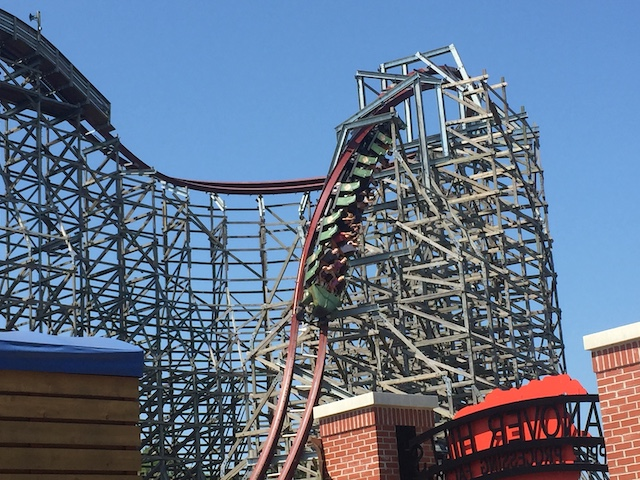
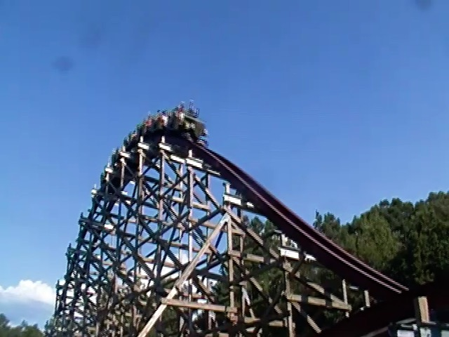
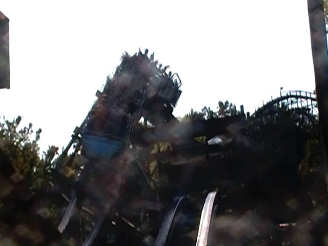
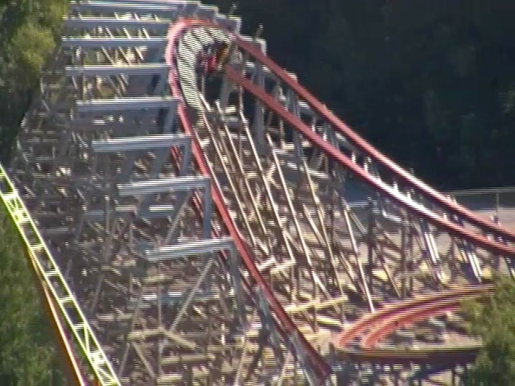
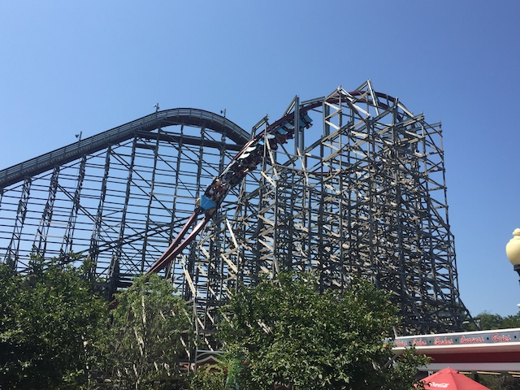
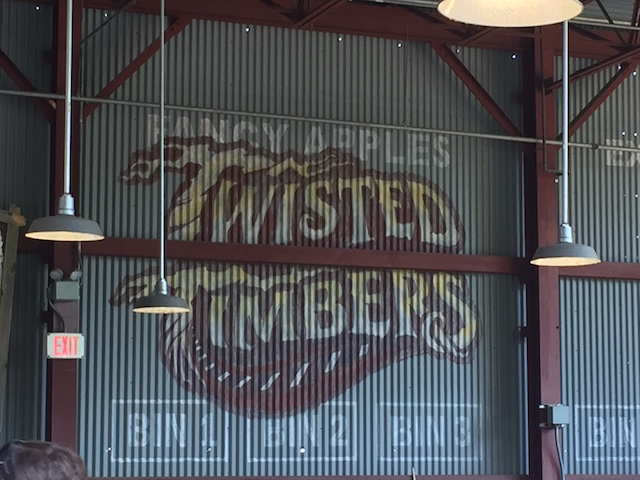

| |
Twisted Timbers Review

Today at Incrediblecoasters, we're going to be reviewing Twisted Timbers at Kings Dominion. Now this is a Rocky Mountain Makeover, where they take an old busted sh*tty wooden coaster and turn it into a kickass crazy steel coaster. And while I never rode the specific coaster they bulldozed for the makeover, I will admit that I did ride its clone, Hurler. And.....that was a pretty mediocre ride that I didn't really care for. And from what I was told, the Kings Dominion version was even worse! But that doesn't matter at all. Because Twisted Timbers is in its place, and this ride is freaking awesome! It has all the classic RMC hallmarks, along with its own fun elements. So yeah. Let's hop in the cars, buckle the seatbelts, pull down our lapbars, and off we go! We roll around a turn, and head up the lifthill. It's not a huge lifthill since Hurler wasn't that big of a ride, and Twisted Timbers is one of the smaller RMCs, but don't worry. It's still a ton of fun. The view isn't that great. Sure, you can see Windseeker, the Twisted Timbers layout. Grizzly, and a bunch of trees. But....I wouldn't call that a great view. We dip down, and go around a banked turn. However, halfway through this turn, we begin to head into a barrel roll! DAMN!!! And we're dropping at the same time! GOD DAMN IT!!! Yep. This ride has one of those famous RMC Barrel Roll Drops. And....I LOVE THESE THINGS!!! I REALLY DO!!! This kicks ass on Storm Chaser, and it kicks ass here too! Something about them is slightly disorienting, but mostly just a ton of fun! We then shred through a tiny little hill. Unfortunately, unlike on other RMCs, this tiny hill after the first drop doesn't result in any airtime. No need to panic, there is plenty of airtime on Twisted Timbers. But it is a mild bummer. We then head into an overbanked turn. And....it's kind of cruisy at this point. I mean, we're having fun and all. But....this doesn't seem to have the same sort of snap that you would expect from an RMC. The overbank here kind of reminds me of a smaller version of the overbanked turns on Millenium Force and Xcelerator. Almost like a breather moment already in the ride. But don't worry, it gets better later on. We then shred through another tiny little hill. This one is a little better since there's a little bit of airtime here. Plus, there's a few laterals since it also kind of turns. However, we then head into an airtime hill. Not a tiny little bump. Not a twisty hill. No, an honest to god, legit airtime hill. And in true RMC fashion, this thing is strong! Really good ejector air. And from here, it sort of just acts like a normal coaster! Up another airtime hill. EJECTOR AIR!!! Another airtime hill! EJECTOR AIR!!! This is a ton of fun, but....it seems to be a bit more traditional than your standard RMC. Not a bad thing, just.....different. Go through another teeny airtime hill. And...it appears like we have another overbanked turn. Except....this this isn't just overbanked. No, this thing goes so far as to become a f*cking cutback! You know, that's really cool. Gives the ride a lot of G forces, as well as some nice spunk. Plus, it sort of makes this ride an RMC. However, then we go right into what Twisted Timbers does best. Airtime! Yep. This thing is a f*cking airtime meachine! The airtime hills are small, but you know the drill. EJECT!!! ASS OUT OF SEAT!!! EJECT!!! ASS OUT OF SEAT!!! We think it's gonna hit us with the same pattern, when.....WHOA!!! These airtime hills get twisty! So we have some nice laterals to go with our EJECTOR AIR!!! A combo that I love! Do the same thing again, only now, in the other direction. SWEET!!! We then head into another small airtime hill. But it's strong. And with headchoppers thanks to being under the supports, that makes it cool. We then head into....this weird sort of turn. It's like it's a standard banked curve, only to quickly bank in the other direction at the top, and then bank back in the orginal direction to finish the banked turn. It's kind of weird, a little trippy. But....I love it. It kicks major ass. And....the pattern continues. Ejector air!!! YAY!!! Barrel Roll! WHOA!!! That catches us off guard. And thanks to its snapiness, it really whips us through, and is another reminder that you are indeed, riding an RMC. Go through another banked turn, and.....man! This thing has some whip to it! Go through another one, and.....SNAP!!! It gets us again! Yeah. This ride really loves its laterals. Almost as much as its airtime. Speaking of which, we're in the grand finale, and have some airtime hills to go through. They may be small, but DAMN!!! Nice ejector air pop!!! Hill #2. WHAM!!! Out of our seats! And as we rise up into the brake run, Twisted Timbers blesses us with one last pop of ejector air before we glide into the brake run. DAMN!! This ride is good! REALLY GOOD!!! Honestly, the only real issue I have with it is the breather moment it has in the beginning with the overbanked turn that is the only part of the ride that isn't really intense. But....this ride is awesome. It really seems to focus on the airtime, a bit more than other RMCs, that seem more invested in twisty bits. But just like those RMCs also have amazing ejector air moments as well, Twisted Timbers too, has its twisty moments. It's an amazing ride and one that I HIGHLY recommend you ride when visiting Kings Dominion.
9/10
Location: Kings Dominion
Opened: 2018
Built by: Rocky Mountain Coasters
Last Ridden: July 28, 2019
Twisted Timbers Photos





Home
|